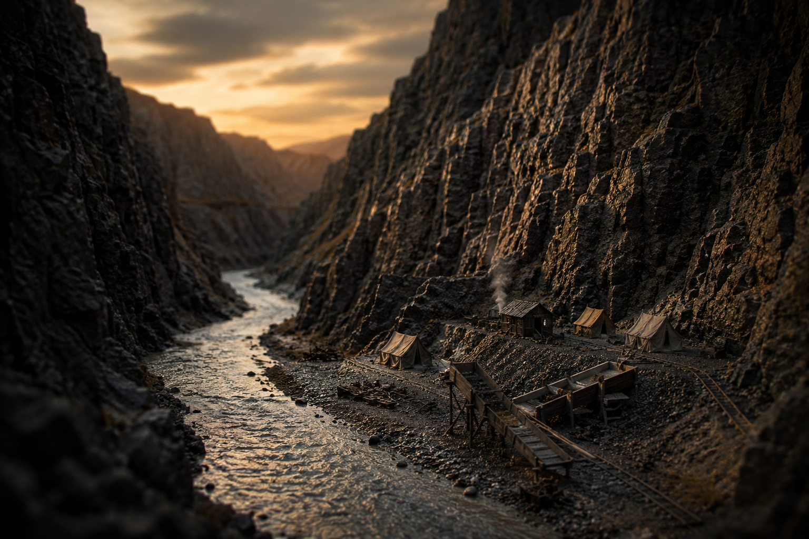

Massacre at Deep Creek: The Slaughter the Canyon Hid for a Century

Most of the tales I set down by this lantern have a measure of swagger in them — men racing through mountains for a thousand dollars, crews dynamiting each other up a canyon, the kind of trouble a fellow can shake his head at and grin. This is not one of those. This one I'll tell you plain and quiet, because it doesn't deserve any dressing up, and because for more than a hundred years almost nobody told it at all.
Hells Canyon is the deepest gorge on this continent — deeper than the Grand Canyon, the Snake River grinding away at the bottom of it between Oregon and Idaho. It is the kind of country that keeps secrets. In the fall of 1886 a party of Chinese gold miners poled their boats up that river out of Lewiston, sixty-five miles into the rock, and made a camp on a little stream called Deep Creek. They worked the gravels through the winter for the fine gold the white outfits had passed over. They were good at it. They had a few thousand dollars in flour gold to show for the cold.
The Men Who Came Down the Canyon
In the spring of 1887 a gang of seven came for them. Not soldiers, not a mob in the heat of some riot — just horse thieves and hard cases out of Wallowa County, led by a man named Bruce Evans, with a couple of schoolboys riding along. They had worked out that a camp of Chinese miners, alone in the deepest canyon in the West, was a sack of gold that could not call for help and that the law would not much trouble itself to avenge.
The canyon that had hidden their gold from other men was the same canyon that hid what was done to them.
Over the 27th and 28th of May they shot every miner in the camp with high-powered rifles. One man broke and ran, and they ran him down and killed him with a rock. When it was finished — between thirty-one and thirty-four men dead, the exact count never certain — the gang mutilated the bodies, threw them into the Snake, took the gold, and burned the camp to the waterline. The river carried some of the dead all the way down to Lewiston in the weeks that followed. That is how anyone learned of it at all.
A Jury That Looked Away
Here is the part that ought to make a person set their jaw. The crime was known. Some of the gang were named. There was a trial. And in September of 1888 an Oregon jury looked at it all and found the accused not guilty of anything. Nobody hanged. Nobody went to prison. A camp of more than thirty men had been murdered for their gold, and the verdict of the country was that, in effect, nothing wrong had occurred.
So the canyon closed back over it. The records went into a box. For more than a century the Deep Creek massacre was a thing that had happened to men whose names mostly nobody had bothered to write down, in a place too remote to visit, judged by a court that had decided not to care. It very nearly vanished altogether.
Why I Tell It Here
You'll ask what a horror like this has to do with railroads and the high iron. The honest answer is the same thread that runs through Wellington and through Rogers Pass, three days apart in 1910 — the Pacific Northwest was opened by Chinese hands, in the mines and on the grades and in the snowsheds, and again and again those same hands were the ones the record forgot. At Rogers Pass the snow took them and the company logged them as a number. At Deep Creek a gang took them for their gold and a jury logged them as nothing. The trains and the towns that came after were built on a frontier that did this, quietly, and then looked away.
In 2012 they finally set a granite marker on the bank of the Snake at the massacre site, with the names of the ten men who could be identified cut into the stone. It took a hundred and twenty-five years. That is the whole of the justice this tale ever got — a stone, and the refusal to let the canyon keep the secret any longer. So I tell it.
What Really Happened
On May 27–28, 1887, a gang of seven horse thieves from Wallowa County, Oregon — led by Bruce Evans — ambushed and murdered a group of Chinese gold miners camped at Deep Creek in Hells Canyon. Estimates of the dead range from 31 to 34; the bodies were mutilated and thrown into the Snake River, and the camp was robbed and burned. It is considered one of the worst atrocities against Chinese immigrants in the American West.
Three of the gang were tried in 1888 and acquitted; no one was ever convicted. The case was largely forgotten until trial records were rediscovered, and in 2012 a memorial was installed at the site (the area is now officially named Chinese Massacre Cove). Ten victims' names are inscribed on it. Unlike most tales on this site, this account is told straight, with minimal embellishment — the dates, the toll, the acquittal, and the memorial are drawn from the historical record.